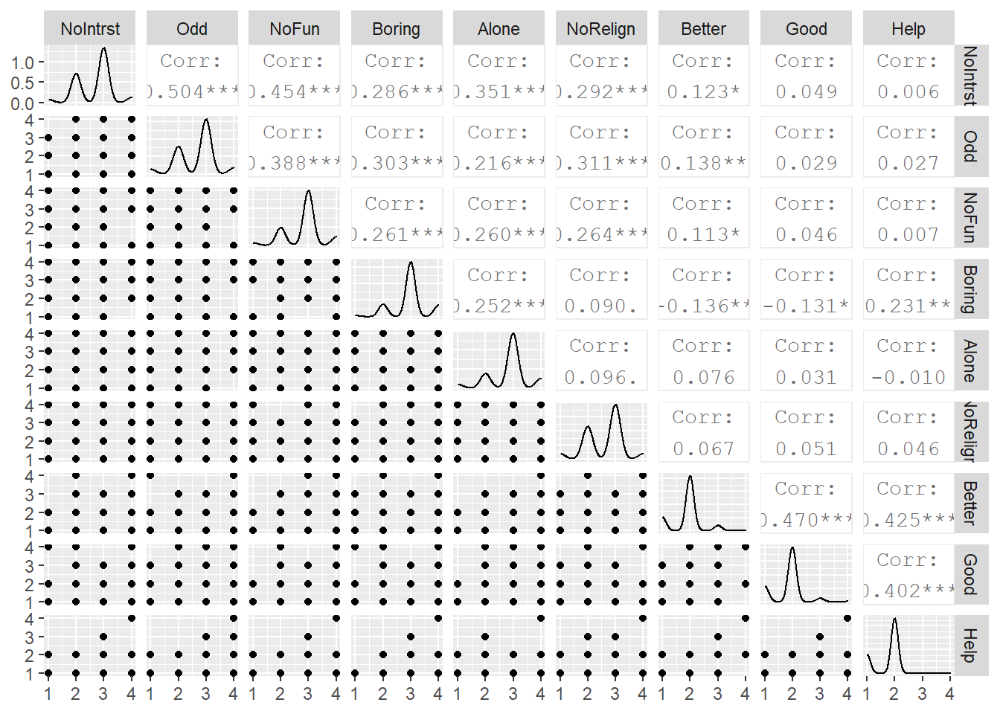
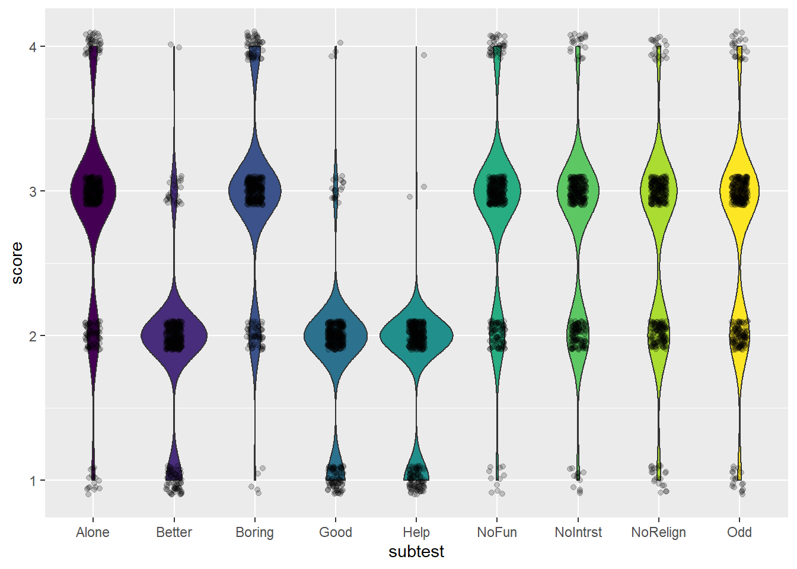
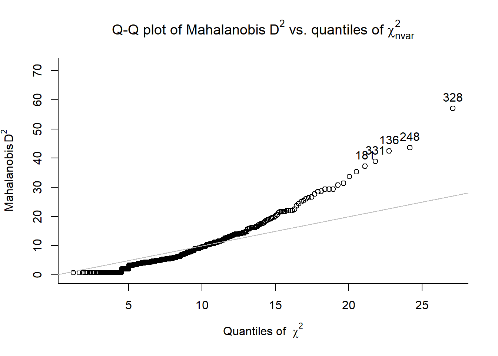
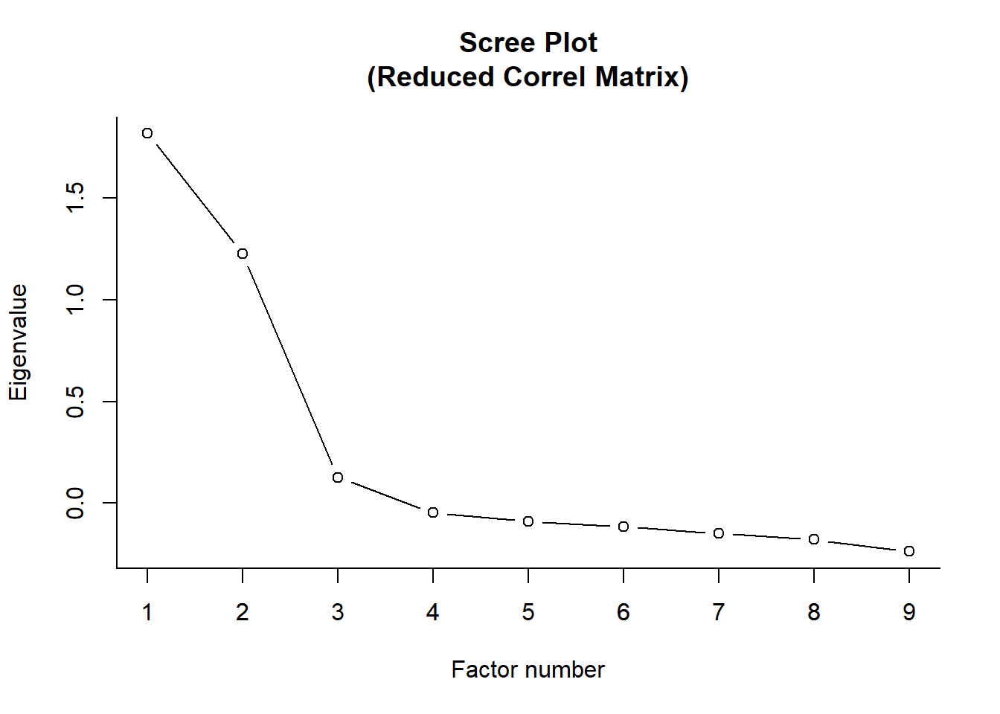
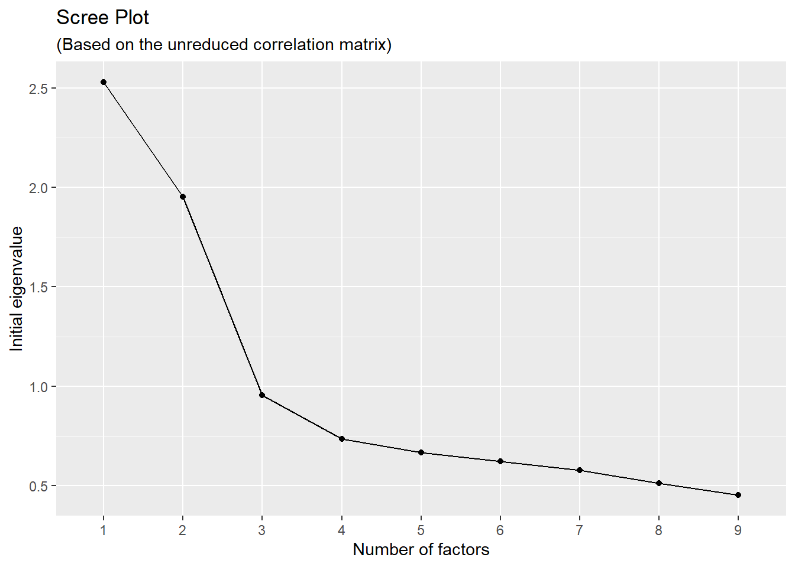
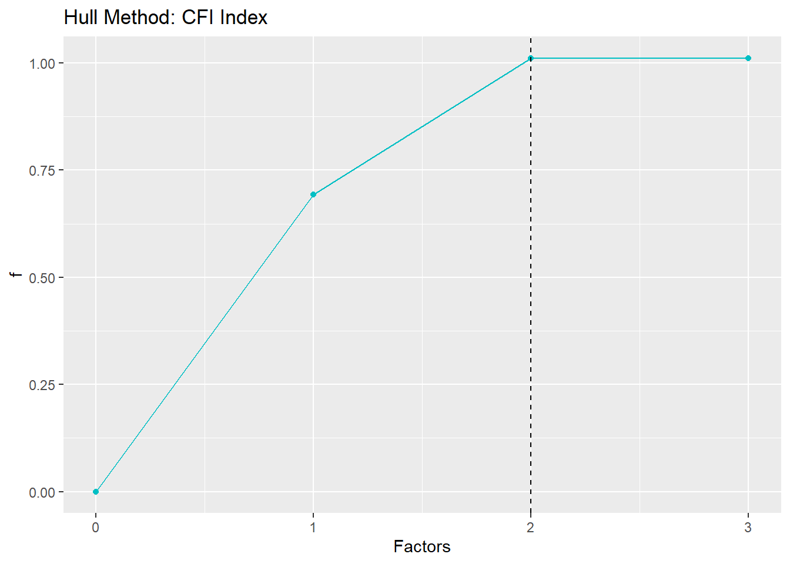
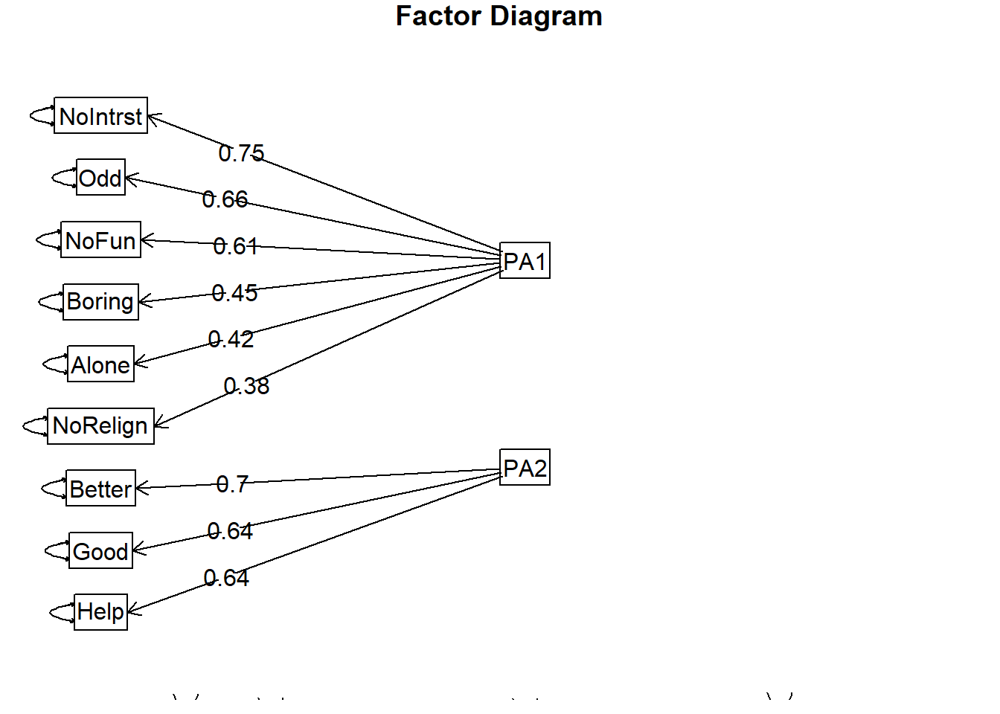
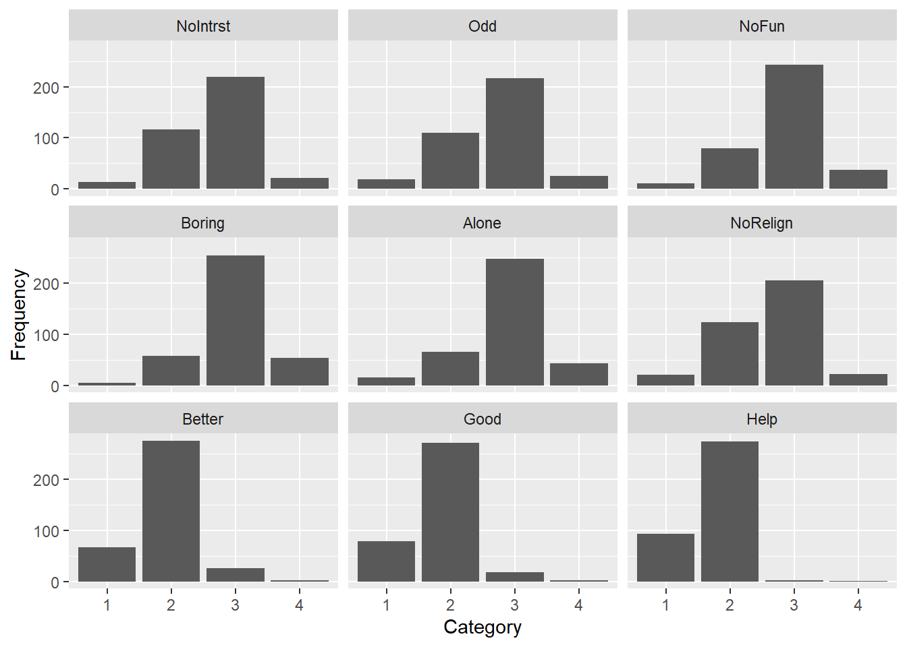
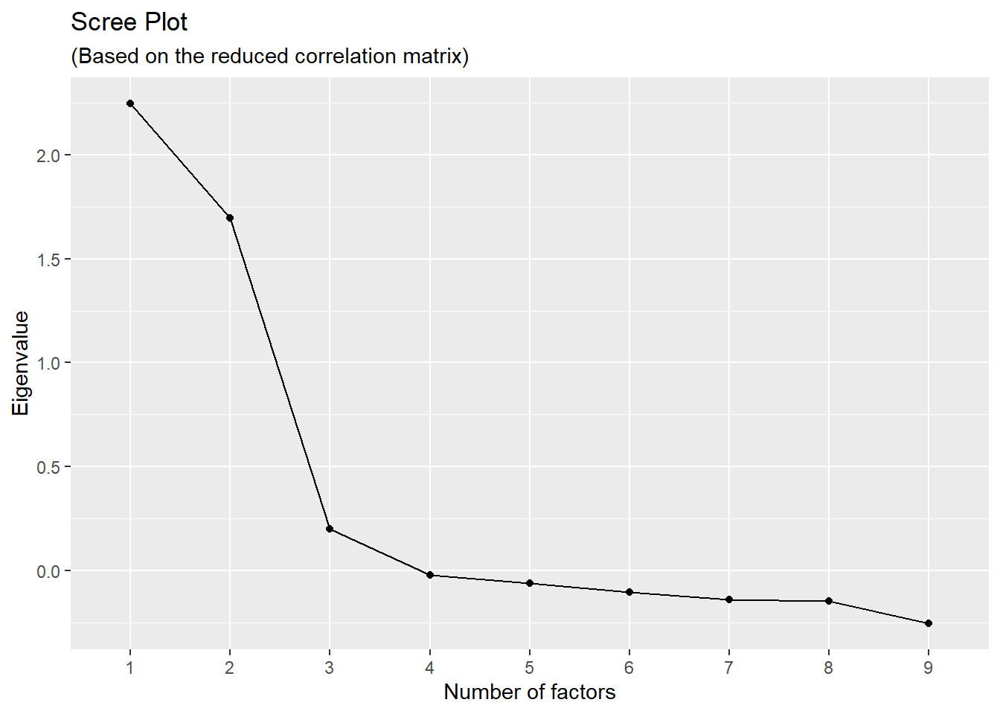

Chapter 12 Exploratory Factor Analysis
As is often the case with other operations in the R world, there exist different packages and functions for performing exploratory factor analysis (EFA). According to a review by Luo and colleagues (2019), the most frequently used and comprehensive package for EFA appears to be the psych package (Revelle, 2020). Its fa() function can be used with raw data as well as with correlation or covariance matrices. The function looks like this:
- The first argument, which can replace the
r =, is for the data, whether it be a data frame of the raw data or a correlation or covariance matrix. - The
nfactors =argument has as its default 1 but we should determine this number based on our preparatory steps, which we get into in this chapter. - The
n.obs =is required if we use a correlation or covariance matrix instead of raw data. If we use raw data, we exclude this argument. - The
fm =argument is for the factor method. There are several options described in the help file. Two common ones arefm = "pa"for the principal axis method of factor extraction andfm = "ml"for maximum likelihood method of extraction, but others are available such as minimum residual solution, which is the default in this package. - The
rotate =argument is for specifying the rotation method. There are several options listed in the help file, includingrotate = "none", which we can use in our preparatory steps, as well asrotate = "promax","oblimin", and others for oblique rotations, which are frequently used if we assume that the constructs underlying the factors are related, as is often the case with studies in the social sciences. There are orthogonal rotations as well, including"varimax"and"quartimax", and so forth. These are appropriate if we assume that the correlations between the factors should be zero.
As usual, see can look in the help files to find other available arguments and options. In the examples in this chapter, we will use promax rotation because we will assume that the constructs underlying the factors are related (though we may find evidence suggesting otherwise). We will also use principal axis factoring.
Principal axis factoring is not to be confused with principal components analysis (PCA), which strictly speaking is not a type of common factor analysis because it generates components rather than factors. Unlike factors, components include the unique variances of the observed variables. This is similar to how we calculate composite scores in classical test theory (though PCA finds the best possible solution to reducing variables, with their error, into composites). PCA is appropriate when we are not interested in assuming that there is an underlying latent variable such as a construct corresponding with the components. When we assume that the factors do represent latent traits, common factor analysis is more appropriate than PCA. Because we are interested in measuring latent traits or constructs, we do not use PCA in this chapter.
In this chapter, we will do the following:
- carry out the preparatory steps to factor analysis,
- conduct a factor analysis with raw data and examine the output,
- prepare correlation data for a factor analysis,
- conduct a factor analysis on categorical data,
- save persons’ factor scores, and
- calculate coefficient omega as an internal consistency reliability estimate.
In this chapter, we will use several packages in addition to the psych package. We should make sure we have installed the following packages, and use install.packages() function for those that we are missing:
library(tidyverse)
library(GGally)
library(ggplot2)
library(mvnormtest)
library(nFactors)
library(EFA.MRFA)
library(Matrix)
library(CTT)
library(dplyr)
library(questionr)
library(gridExtra)
library(skimr)12.1 Preparatory steps
Here are some preparatory steps we should consider before jumping into a factor analysis.
- Examine the data and the correlations
- Address statistical assumptions
- Determine the factorability of the data using the KMO and Bartlett tests
- Identify the number of factors to retain for the factor analysis
12.1.1 Examining the data
Let’s import the data. This is a raw data set (rather than a covariance or correlation matrix), so each row represents a person. We should isolate our data frame to include only the columns with the observed data. In our data frame, we have an ID variable, PID, in the first column. So, we can use a -1 in the column index to remove the first column and save our data to a new object, dat. Alternatively, we could include in our indexing all of the columns corresponding to our observed data.102
## PID NoIntrst Odd NoFun Boring Alone NoRelign Better Good Help
## 1 S0001 3 3 3 4 3 4 1 1 1
## 2 S0002 3 2 3 4 3 2 1 2 1
## 3 S0003 2 2 3 2 3 2 2 2 2
## 4 S0004 2 3 3 3 1 3 2 2 2
## 5 S0005 2 3 3 3 1 3 2 1 1
## 6 S0006 2 3 2 4 3 3 1 2 1## NoIntrst Odd NoFun Boring Alone NoRelign Better Good Help
## 1 3 3 3 4 3 4 1 1 1
## 2 3 2 3 4 3 2 1 2 1
## 3 2 2 3 2 3 2 2 2 2
## 4 2 3 3 3 1 3 2 2 2
## 5 2 3 3 3 1 3 2 1 1
## 6 2 3 2 4 3 3 1 2 112.1.1.1 Descriptive statistics
Let’s look at the descriptive statistics. There are many ways to do this. A convenient function is describe() from the psych package.103 We can see our usual descriptive statistics and more. It seems as though all of our variables are on similar scales. They all have acceptable skew and kurtosis.
| n | M | sd | Med | Min | Max | Skew | Kurtosis | seM | |
|---|---|---|---|---|---|---|---|---|---|
| NoIntrst | 371 | 2.67 | 0.64 | 3 | 1 | 4 | -0.39 | 0.16 | 0.03 |
| Odd | 371 | 2.67 | 0.68 | 3 | 1 | 4 | -0.47 | 0.19 | 0.04 |
| NoFun | 371 | 2.83 | 0.64 | 3 | 1 | 4 | -0.53 | 0.79 | 0.03 |
| Boring | 371 | 2.96 | 0.60 | 3 | 1 | 4 | -0.37 | 0.98 | 0.03 |
| Alone | 371 | 2.85 | 0.67 | 3 | 1 | 4 | -0.70 | 1.08 | 0.03 |
| NoRelign | 371 | 2.61 | 0.69 | 3 | 1 | 4 | -0.39 | 0.00 | 0.04 |
| Better | 371 | 1.90 | 0.51 | 2 | 1 | 4 | 0.09 | 1.71 | 0.03 |
| Good | 371 | 1.85 | 0.52 | 2 | 1 | 4 | 0.17 | 1.97 | 0.03 |
| Help | 371 | 1.76 | 0.46 | 2 | 1 | 4 | -0.61 | 0.74 | 0.02 |
12.1.1.2 Correlation matrix
We should take a look at the correlations among our variables to determine if factor analysis is appropriate. We expect at least some of these to differ from zero. Also, if there are any correlations that are unexpectedly very high in magnitude, such as close to 1 or -1, the two variables may be too collinear, indicating that they are potentially redundant and that we may seek to remove one or combine them. If we are writing a report, we might report this matrix in an appendix. Matrices like this allow future researchers to perform factor analyses on our correlation data if they wish to confirm the results with different model specifications or software.
We could conduct significant tests for each of these correlations, but that’s probably not necessary if we use the Bartlett test, which we will. One thing we can do is eyeball the correlations and see if they make sense given the theory (if one exists) or general understanding of how we would expect the subtest scores to relate to one another in our population.
Here is the prettified correlation matrix from these data.104| NoIntrst | Odd | NoFun | Boring | Alone | NoRelign | Better | Good | Help | |
|---|---|---|---|---|---|---|---|---|---|
| NoIntrst | 1 | ||||||||
| Odd | .504 | 1 | |||||||
| NoFun | .454 | .388 | 1 | ||||||
| Boring | .286 | .303 | .261 | 1 | |||||
| Alone | .351 | .216 | .260 | .252 | 1 | ||||
| NoRelign | .292 | .311 | .264 | .090 | .096 | 1 | |||
| Better | .123 | .138 | .113 | -.136 | .076 | .067 | 1 | ||
| Good | .049 | .029 | .046 | -.131 | .031 | .051 | .470 | 1 | |
| Help | .006 | .027 | .007 | -.231 | -.010 | .046 | .425 | .402 | 1 |
12.1.2 Addressing assumptions
The assumptions for factor analysis are the same as most of those for multivariate linear models (Schumacker, 2016; Tabachnick & Fidell, 2013). Linearity, outliers, missing data, and normality can all have an effect on the Pearson correlations that are analyzed and used in estimating the factor-analysis model. If these assumptions are not met, the legitimacy of our factor-analysis results can come into question.
12.1.2.1 Linearity
Linearity is perhaps the most salient assumption. The assumption is that the correlations among the observed variables and factors are linear. Non-linear relationships can result in misspecified correlations and therefore a misspecified factor-analysis model. We might consider examining scatter plots of all pairs of the observed variables (Tabachnick & Fidell, 2013). The GGally package (Schloerke et al., 2020) offers a function for this, ggpairs(). The bivariate scatterplots are on the lower off-diagonal of the matrix. This function also conveniently provides a correlation matrix with asterisks on the upper off-diagonal to indicate statistical significance, along with density plots on the diagonal, which can help in judging univariate normality.

The scatter plots are not very informative with our particular set of data because the variables are not continuous.
This brings up an important point: Linearity rests on the assumption that the observed variables are continuous; that is, that our data are on interval- or ratio-level scales. Categorical and ordered categorical data are not well suited to factor analysis. Generally, if our data have fewer than five functioning categories, we have a hard time claiming that our data are continuous. There are alternative methods we can use with data that do not meet this assumption. One is to use a polychoric correlation, which we do at the end of this chapter.105 To keep consistent with this assumption, we refer to the observed variables in this portion of the chapter as subtests rather than items because items tend to be dichotomous or polytomous in nature.
We might use the unique() function for each variable to see how many unique data points there are per variable. If the data are continuous, there will likely be a long list of unique values for each variable. If the data are dichotomous, there will be only two values (unless everyone missed an item or everyone got it right). With ordinal data, such as those in most polytomous data, we will see which values are being used in that scale.106 Let’s count the number of unique data points in each variable.
unique_counter <- function(x){
uniques <- unique(x)
n_uniques <- sum(!is.na(uniques))
n_uniques
}
apply(dat, 2, unique_counter)## NoIntrst Odd NoFun Boring Alone NoRelign Better Good
## 4 4 4 4 4 4 4 4
## Help
## 4Strictly speaking, we should not fit a garden-variety factor-analysis model to these data in their current form because there are only four unique values per variable. The data appear to be on an ordinal-level scale. We will proceed with this example for demonstration; however, these results must be interpreted with caution and not used for high-stakes uses or standalone validity evidence given that this assumption was not met. These data are more appropriately modeled using the method presented later in the chapter. Nonetheless, we will proceed but recognize that the more appropriate model will be presented later.
12.1.2.2 Outliers
Similarly, we can investigate whether there are outliers, as these can bias correlation estimates. We could look at histograms, boxplots, or violin plots to appraise this assumption. The ggplot2 package has violin plot functionality but we have to reshape the data to a long format first:107
library(tidyverse)
datL <- raw %>%
pivot_longer(names_to = "subtest",
values_to = "score",
c(names(dat)) )
library(ggplot2)
ggplot(datL, aes(x = subtest, y = score, fill = subtest)) +
geom_violin(show.legend = FALSE) +
geom_jitter(height = .10, width = .10, alpha = .20, show.legend = FALSE) +
scale_fill_viridis_d() 
If our data were continuous, these plots would be more informative. Most of these variables, with the exception of the Help and Good subtest tests, do not seem to have outliers. However, we should also be aware that with ordinal-type scales, if there is only a single observation at a scale point, that point is not well represented in the data. With the Help subtest, if the person scoring \(4\) had not participated in the subtest, the scale would have only three points.
We can also use the psych package’s outlier() function to see if there are multivariate outliers.

We see several. It looks like Case 328 is an extreme outlier and that there are several other candidates that might qualify as outliers.
For a formal test of outliers, we can specify a critical value for which the Mahalnobis distance is significant. The degrees of freedom is the number of variables; we can set \(\alpha = .001\), as seems to be the custom.
alph_crit <- .001
n_nu <- ncol(dat) # Number of variables
crit_val <- (qchisq(p = 1-(alph_crit), df = n_nu))
crit_val## [1] 27.87716With this, the critical value is \(27.88\). We can filter those observations from the psych’s outlier() output that exceed this value using the filter() function from the dplyr package (Wickham, François, et al., 2020). The object we created above from psych’s outlier() output was outLiars. Let’s use that. We might want to attach the person ID variable to that object so we will know which cases are the culprits. Then, we can filter them if they exceed our critical value. Then, we can arrange them from high to low.108
library(dplyr)
outers <- data.frame(outLiars) %>%
mutate(PID = raw$PID) %>%
filter(outLiars > crit_val) %>%
arrange(desc(outLiars))
outers## outLiars PID
## 1 57.08836 S0328
## 2 43.53517 S0248
## 3 42.43203 S0136
## 4 38.88572 S0331
## 5 37.24053 S0181
## 6 35.36739 S0064
## 7 33.71409 S0050
## 8 31.44294 S0066
## 9 30.77297 S0310
## 10 29.42374 S0201
## 11 29.36322 S0079
## 12 29.33548 S0124
## 13 28.77977 S0348
## 14 28.47775 S0160There are 14 outliers exceeding our critical value. If our objective is to obtain a factor model to serve as evidence in appraising the validity of our score interpretations with this instrument as it is used with the broader population, we might opt to remove these observations before fitting the factor-analysis model. Some scholars may insist we retain outlying observations because they are indeed members of the population; nonetheless, they can have stronger effects on the model estimates than their non-outlying counterparts. On the other hand, if we intend to use the EFA to estimate these observations’ scores, we may have little choice but to leave them in the data.
Alternatively, we could take a sensitivity-analysis approach by comparing the results of two factor-analysis models, one with these cases removed and one with them included. If the results are arguably similar—such that we reach the same conclusions about the internal structure—we might then decide to retain our outliers as we could then report the results with greater confidence. Whatever our decision is, we should document what we have done. If we retain these outliers and do not perform that sensitivity analysis, we should report that the results of our factor analysis need to be taken with caution. There are other approaches to examining and handling outliers (Tabachnick & Fidell, 2013).
12.1.2.3 Missing data
Additionally, if we have missing data, the Pearson correlations in the factor-analysis procedure may not reflect those of the population. According to Schumacker (2016), if more than 10% of the data are missing, we should consider imputation methods. Here’s one way to calculate the percentage of missing data:
## [1] 0In our data set, there are no missing data.
12.1.2.4 Normality
If we use maximum likelihood as our factor method, we should examine normality in the observed variables. For other methods, normality is desirable but may not be necessary (Schumacker, 2016). Data transformation approaches can be used on the variables (Tabachnick & Fidell, 2013). If normality is a concern, we can examine the multivariate normality using the Shapiro-Wilk test from the mvnormtest package (Jarek, 2012). If the null hypothesis is rejected, the data are not likely multivariate normal.
##
## Shapiro-Wilk normality test
##
## data: Z
## W = 0.92551, p-value = 1.251e-12We could also examine univariate tests of normality. In Base R, we can use the shapiro.test() with each variable.109 Again, if the null hypothesis is rejected, the variable is not likely normal.
Because our data are not normally distributed, we should avoid using maximum likelihood as the factor extraction method. Furthermore, we should report that our data are not likely normally distributed but that we proceeded with the factor analysis anyway. We could also offer a qualification such as “to the extent that normality fails, the solution is degraded but may still be worthwhile” (Tabachnick & Fidell, 2013, p. 618).
12.1.3 Determining factorability
The Kaiser-Meyer-Olkin (KMO) statistic predicts if data are likely to factor well given the correlations and partial correlations. The statistic, ranging from 0 to 1, roughly estimates the proportion of variance in the data that might be explained by factors. If we use Kaiser’s (1974) guidelines, a suggested cutoff for determining factorability of the sample data is \(\text{KMO} \geq .60\).
## Kaiser-Meyer-Olkin factor adequacy
## Call: KMO(r = dat)
## Overall MSA = 0.75
## MSA for each item =
## NoIntrst Odd NoFun Boring Alone NoRelign Better Good
## 0.76 0.76 0.82 0.77 0.79 0.81 0.68 0.68
## Help
## 0.71The total KMO is 0.75, indicating that, based on this test, we can probably conduct a factor analysis.
With the Bartlett’s sphericity test, the null hypothesis is that the correlation matrix of the sample data comes from a population in which the variables have zero correlations with each other. In other words, the correlation matrix in the population is an identity matrix. Since we do need a set of correlated variables to perform a factor analysis, we want H0 to be rejected.
## $chisq
## [1] 604.5854
##
## $p.value
## [1] 2.276163e-104
##
## $df
## [1] 36The test suggests we can reject the null hypothesis that the data are not collinear. This is no surprise to us if we saw in our correlation matrix that there are at least some moderate correlations in our data. Nonetheless, given this and the results of the KMO test, we can proceed with factor analysis.
Optionally, we might also examine the generalized variance of the correlation matrix by calculating the determinant, as recommended by Shumacker (2016). If the determinant is positive, we’re in good shape. If it is negative, we risk having a nonpositive definite matrix and not being able to fit the factor-analysis model to the data. The det() function on the correlation matrix is a quick way to obtain this.
## [1] 0.1918348We have a positive determinant, which means the factor analysis will probably run.
12.1.4 Determining how many factors to retain
It is important to use multiple methods to determine how many factors to retain. Some researchers use the eigenvalue-greater-than-one approach, also called the K1 criterion named after the Kaiser’s (1974) work, to determining the number of factors to retain. It is important to note that this method was developed for principal components analysis rather than factor analysis. If you do use that approach, interpret the results with caution. It is a good idea to accompany that method with at least one of these other three methods.
12.1.4.1 Parallel analysis
The parallel analysis (Horn, 1965) provides a method for comparing our data to randomly generated data sets having the same number of persons and subtests. After ranking these randomly generated data from low to high, the procedure can estimate the eigenvalue at each \(n\)th factor at the 95 percentile level. We compare the eigenvalues calculated from our observed data with those of the randomly generated data. If with a given model, such as one with \(n\) factors, 95% of the randomly drawn samples have eigenvalues that exceed what we observe in our data, we can assume that the factor structure in our data lies outside that 95 percent range (in other words, our eigenvalues do not likely to occur by dumb luck). If this occurs at the \(n\)th factor, we can assume that the earlier number of factors explained more of the common variance than would occur by chance.
We can use the parallel() function from the nFactors package (Raiche & Magis, 2020) to perform a parallel analysis. The parallel analysis takes random draws of data and estimates the eigenvalues that would occur randomly in each random draw. The mean of the random draws is reported, along with the 95 percentile. We want to use the 95 percentile.
The first step is to compute the eigenvalues. The maximum number of initial eigenvalues can be as high as the number of subtests, but we typically do not seek to have each subtest represent its own factor. The eigenvalues in the parallel analysis are from the reduced correlation matrix, meaning that the diagonal of the correlation matrix excludes the subtests’ unique variances. To distinguish these eigenvalues from their counterparts from an unreduced matrix—the initial eigenvalues—we can labels these as reduced or extracted eigenvalues.
library(nFactors)
# help(package="nFactors")
n_p <- sum(complete.cases(dat)) # The number of persons in our data
n_nu <- ncol(dat) # The number of variables in our data
set.seed(123) # To reproduce our randomly generated results.
ReducedEig <- eigenComputes(dat, model = "factors", use = "complete")
n_factors <- length(ReducedEig)
paral <- parallel(subject = n_p,
var = n_nu,
rep = 100,
quantile = .95,
model = "factors")
ParallelAna <- data.frame(Nfactor = 1:n_factors,
ReducedEig,
RandEigM = paral$eigen$mevpea,
RandEig95= paral$eigen$qevpea)
ParallelAna <- round(ParallelAna, 3)
ParallelAna
# write.csv(ParallelAna,"ParallelAnalysis.csv",row.names = FALSE)## Nfactor ReducedEig RandEigM RandEig95
## 1 1 1.816 0.268 0.346
## 2 2 1.227 0.181 0.237
## 3 3 0.127 0.119 0.171
## 4 4 -0.047 0.064 0.108
## 5 5 -0.090 0.013 0.050
## 6 6 -0.114 -0.031 -0.002
## 7 7 -0.148 -0.083 -0.047
## 8 8 -0.179 -0.136 -0.100
## 9 9 -0.237 -0.202 -0.160Because this operation is based on random draws of the data, the point estimate and 95th percentile estimate will differ if we performed this operation again. In our code, we used the set.seed() function to make this particular result reproducible. We can remove that line of code or change the seed values and observe different results.110
In our output, we can use the rightmost column and identify at what point 95% of the randomly drawn data’s eigenvalues exceed our reduced-eigenvalue estimates. We see that it is at factor number \(3\) that our observed reduced eigenvalue (\(0.127\)) is exceeded by the randomly generated eigenvalue (\(0.171\)). Based on this, we step down to one factor below this and decide we should retain \(2\) factors.111
12.1.4.2 Scree plot
We can use the objects we created in the parallel analysis to plot the factor numbers and eigenvalues (or reduced eigenvalues, in this case). This is a scree plot. The term comes from boulders falling down a cliff and collecting at the bottom.
library(ggplot2)
scree <- data.frame(Factor_n = as.factor(1:n_factors),
Eigenvalue = ReducedEig)
ggplot(scree, aes(x = Factor_n, y = Eigenvalue, group = 1)) +
geom_point() + geom_line() +
xlab("Number of factors") +
labs( title = "Scree Plot",
subtitle = "(Based on the reduced correlation matrix)")Alternatively, we can use Base R’s plot() function:
plot(1:n_factors, ReducedEig, #X and Y axis values
type = "b", bty = "l",
main = "Scree Plot\n(Reduced Correl Matrix)",
xlab = "Factor number", ylab="Eigenvalue")
axis(side = 1, at = 1:n_factors, labels = 1:n_factors)
We see that most of the “debris” from the third factor and onward form a kind of even slope. This suggests that the number of factors above this third one might be optimal. Scree plots are somewhat subjective in their interpretation. One could argue that this one has as an inflection point between the third and fourth factor, suggesting we retain three factors instead of just two.
Optionally, we can can generate a scree plot that uses the unreduced correlation matrix, which is what other programs such as SPSS and SAS produce. Let’s use the fa() function from the psych package to perform a factor analysis solely to extract the eigenvalues. One of the arguments is nfactors =, which we do not know at this stage, so we specify it as the number of subtests, which is the number of columns in our data frame ncol(dat):
library(psych)
fafitfree <- fa(dat,nfactors = ncol(dat), rotate = "none")
n_factors <- length(fafitfree$e.values)
scree <- data.frame(
Factor_n = as.factor(1:n_factors),
Eigenvalue = fafitfree$e.values)
ggplot(scree, aes(x = Factor_n, y = Eigenvalue, group = 1)) +
geom_point() + geom_line() +
xlab("Number of factors") +
ylab("Initial eigenvalue") +
labs( title = "Scree Plot",
subtitle = "(Based on the unreduced correlation matrix)")
The shape of this plot is similar to that generated from the reduced correlation matrix (though the eigenvalues on the Y axis are larger because the unique variance has not yet been removed from the correlation matrix). If we also opted to use the eigenvalue-greater-than-one approach, we could use this plot and see that Factor 3 is below this criterion.112
12.1.4.3 Hull method
We can use the Hull method (Lorenzo-Seva et al., 2011) to identify the number of factors at which the fit of the model and the parsimony of the model are a good balance. In a perfect model, we would have a large number of factors but such a model would be inefficient if there is shared variance among the subtests. We can use the hullEFA() function from the EFA.MRFA package (Navarro-Gonzalez & Lorenzo-Seva, 2020).
## HULL METHOD - CFI INDEX
##
## q f g st
## 0 0.0000 36 0.0000
## 1 0.6930 27 1.9389
## 2 1.0107 19 433.6852
## 3 1.0114 12 0.0000
##
## Number of advised dimensions: 2
##
## -----------------------------------------------
We included one argument in that function, index_hull = "CFI", which sets the index to be the comparative fit index (CFI).113 There are other fit indexes available, as described in the help files (and in Lorenzo-Seva et al., 2011). The CFI is a global fit index that we will use in confirmatory factor analysis. The logical range of the CFI is between 0 and 1, with the best possible fit being 1. We see the estimate at the model with two factors is already at 1 (even estimated to be higher than the logical maximum), so it is a clear indication that more than two factors will not improve the fit.
In the output, each row is its own model. The first row is the null model, with 0 factors, the second, a model with 1 factor, and so forth. The f column provides the estimate of the fit index (CFI in our case) for each model. The g column provides the degrees of freedom from this model.114 With more factors, we have fewer degrees of freedom because we are estimating more factor loadings. We want the best return for our use of these degrees of freedom—the best bang for our buck. The rightmost column is the Hull test value. The highest value indicates the optimal number of factors to retain. The graph from the output is provided for us to interpret where there is a leveling off of model fit as we include more factors. The results here are consistent with those of the parallel analysis and the scree plot. We might report something like this:
Based on the parallel analysis from the nFactors package (Raiche & Magis, 2020), the scree plot with the reduced correlation matrix, and the Hull test from the EFA.MRFA package (Navarro-Gonzalez & Lorenzo-Seva, 2020), we determined that the optimal number of factors to retain for our exploratory factor analysis is two.
A limitation of the Hull analysis from this package at this time, it seems, is that it requires a raw data set with complete data rather than a correlation matrix.
12.2 Factor analysis with raw data
Using the fa() function from the psych package, we can now specify a two factor solution. The first argument is the data set; the second is the number of factors. Let’s use the principal axis factor extraction method (fa = "pa"), which is very common, along with Promax rotation. We’ll begin with oblique rather than orthogonal rotation because factors tend to be correlated in education and the social sciences.
library(psych)
# help("fa", package="psych")
fafit <- fa(dat, nfactors = 2, fm = "pa", rotate = "promax")
n_factors <- length(fafit$e.values)
fafit## Factor Analysis using method = pa
## Call: fa(r = dat, nfactors = 2, rotate = "promax", fm = "pa")
## Standardized loadings (pattern matrix) based upon correlation matrix
## PA1 PA2 h2 u2 com
## NoIntrst 0.75 0.05 0.56 0.44 1.0
## Odd 0.66 0.05 0.44 0.56 1.0
## NoFun 0.61 0.04 0.37 0.63 1.0
## Boring 0.45 -0.29 0.28 0.72 1.7
## Alone 0.42 0.00 0.17 0.83 1.0
## NoRelign 0.38 0.07 0.15 0.85 1.1
## Better 0.13 0.70 0.50 0.50 1.1
## Good 0.03 0.64 0.41 0.59 1.0
## Help -0.03 0.64 0.41 0.59 1.0
##
## PA1 PA2
## SS loadings 1.91 1.39
## Proportion Var 0.21 0.15
## Cumulative Var 0.21 0.37
## Proportion Explained 0.58 0.42
## Cumulative Proportion 0.58 1.00
##
## With factor correlations of
## PA1 PA2
## PA1 1 0
## PA2 0 1
##
## Mean item complexity = 1.1
## Test of the hypothesis that 2 factors are sufficient.
##
## The degrees of freedom for the null model are 36 and the objective function was 1.65 with Chi Square of 604.59
## The degrees of freedom for the model are 19 and the objective function was 0.06
##
## The root mean square of the residuals (RMSR) is 0.03
## The df corrected root mean square of the residuals is 0.04
##
## The harmonic number of observations is 371 with the empirical chi square 21.84 with prob < 0.29
## The total number of observations was 371 with Likelihood Chi Square = 22.59 with prob < 0.26
##
## Tucker Lewis Index of factoring reliability = 0.988
## RMSEA index = 0.022 and the 90 % confidence intervals are 0 0.053
## BIC = -89.81
## Fit based upon off diagonal values = 0.99
## Measures of factor score adequacy
## PA1 PA2
## Correlation of (regression) scores with factors 0.88 0.84
## Multiple R square of scores with factors 0.77 0.71
## Minimum correlation of possible factor scores 0.54 0.42The matrix of factor loadings is presented. These are also called pattern coefficients for oblique rotations such as this one. The factors are the columns, which here have a “PA” affixed to the factor number to remind us that principal axis factoring was used. The qualitative names of these factors that eventually go into a report are usually determined by the researcher and their interpretations of the types of subtests (or items) that are reflected by the factor. The h2 and u2 are communalities and unique variances.115
We can prepare this output so it is more readable. For instance, we can ask that the loadings that do not exceed a cut-off value, such as \(.32\), be excluded from the printout.116 This cut-off criterion is a decision rule we should establish before conducting our analysis. We can can also sort the report so that the subtests are grouped by their strongest factor and in the order of loadings within each factor.
## Factor Analysis using method = pa
## Call: fa(r = dat, nfactors = 2, rotate = "promax", fm = "pa")
## Standardized loadings (pattern matrix) based upon correlation matrix
## item PA1 PA2 h2 u2 com
## NoIntrst 1 0.750 0.564 0.436 1.01
## Odd 2 0.662 0.441 0.559 1.01
## NoFun 3 0.609 0.372 0.628 1.01
## Boring 4 0.445 0.280 0.720 1.71
## Alone 5 0.418 0.175 0.825 1.00
## NoRelign 6 0.380 0.150 0.850 1.07
## Better 7 0.696 0.503 0.497 1.07
## Good 8 0.638 0.408 0.592 1.01
## Help 9 0.636 0.406 0.594 1.01
##
## PA1 PA2
## SS loadings 1.908 1.391
## Proportion Var 0.212 0.155
## Cumulative Var 0.212 0.367
## Proportion Explained 0.578 0.422
## Cumulative Proportion 0.578 1.000
##
## With factor correlations of
## PA1 PA2
## PA1 1.000 0.003
## PA2 0.003 1.000
##
## Mean item complexity = 1.1
## Test of the hypothesis that 2 factors are sufficient.
##
## The degrees of freedom for the null model are 36 and the objective function was 1.651 with Chi Square of 604.585
## The degrees of freedom for the model are 19 and the objective function was 0.062
##
## The root mean square of the residuals (RMSR) is 0.029
## The df corrected root mean square of the residuals is 0.039
##
## The harmonic number of observations is 371 with the empirical chi square 21.843 with prob < 0.292
## The total number of observations was 371 with Likelihood Chi Square = 22.595 with prob < 0.256
##
## Tucker Lewis Index of factoring reliability = 0.988
## RMSEA index = 0.0224 and the 90 % confidence intervals are 0 0.053
## BIC = -89.813
## Fit based upon off diagonal values = 0.986
## Measures of factor score adequacy
## PA1 PA2
## Correlation of (regression) scores with factors 0.878 0.843
## Multiple R square of scores with factors 0.770 0.711
## Minimum correlation of possible factor scores 0.541 0.423Let’s extract information from the factor analysis object. First, we can examine the proportion of variance.
PcntVarTable <- data.frame(Factor = 1:n_factors,
Eigenval = fafit$e.values,
PcntVar = fafit$e.values/n_factors*100)
PcntVarTable$Cumul_Pcnt_var <- cumsum(PcntVarTable$PcntVar)
PcntVarTable[2:4]<- round(PcntVarTable[2:4],2)
PcntVarTable
#write.csv(PcntVarTable,"PcntVarTable.csv", row.names=FALSE)## Factor Eigenval PcntVar Cumul_Pcnt_var
## 1 1 2.53 28.09 28.09
## 2 2 1.95 21.69 49.78
## 3 3 0.95 10.60 60.38
## 4 4 0.74 8.17 68.55
## 5 5 0.67 7.42 75.97
## 6 6 0.62 6.92 82.88
## 7 7 0.58 6.42 89.30
## 8 8 0.51 5.68 94.99
## 9 9 0.45 5.01 100.00The variance accounted for by the number of factors we had specified was reported in the output from the fa() function. We can also obtain the values from that outputted object, fafit, and reformat them into a table, which we could export to a CSV file for our report:
VarAccntd <- fafit$Vaccounted
ExtractSSLoads <- data.frame(
SS_Loadings = VarAccntd[1,],
Pcnt_var = VarAccntd[2,]*100,
Cumul_Pcnt_var = VarAccntd[3,]*100)
round(ExtractSSLoads,2)
#write.csv(ExtractSSLoads,"ExtractSSLoads.csv", row.names=FALSE)## SS_Loadings Pcnt_var Cumul_Pcnt_var
## PA1 1.91 21.20 21.20
## PA2 1.39 15.45 36.6512.2.1 Examining pattern coefficients (the factor loadings)
We can now see which subtests load on which factors. In a diagram, these would be the loadings on the arrows from the factor to each subtest. Factor loadings are also called pattern coefficients (the latter being a more accurate term for oblique rotations). The squared pattern coefficients represent the percentage of variance in the observed subtest that is explained by the factor after partialing out the variance explained by the other factors.
The fafit$loadings reports the salient pattern coefficients. In the output, none of the coefficients seems to be complex in this example. We see that none has a loading on another factor with an absolute value greater than our specified cutoff of \(.32\).
##
## Loadings:
## PA1 PA2
## NoIntrst 0.750
## Odd 0.662
## NoFun 0.609
## Boring 0.445 -0.287
## Alone 0.418
## NoRelign 0.380
## Better 0.133 0.696
## Good 0.638
## Help 0.636
##
## PA1 PA2
## SS loadings 1.908 1.390
## Proportion Var 0.212 0.154
## Cumulative Var 0.212 0.366We can isolate the part of the output that has all of the values and round them to a certain number of decimal places if we choose.
## PA1 PA2
## NoIntrst 0.750 0.045
## Odd 0.662 0.050
## NoFun 0.609 0.042
## Boring 0.445 -0.287
## Alone 0.418 0.001
## NoRelign 0.380 0.072
## Better 0.133 0.696
## Good 0.032 0.638
## Help -0.034 0.636Let’s assign these loadings to an object called PattM to remind us this is the pattern matrix. We’ll use this in our report.
If we use these same data with another program, such as SPSS, and produce the pattern matrix, the result will be close but may not be precisely the same as that produced here because of then different algorithms used in the programs (Revelle, 2020).117
We can look at the factor diagram using the fa.diagram() function in the psych package. This will display the loadings (i.e., the pattern coefficients in this oblique model). We use the cut = .32 argument to display only those parameters with an absolute value exceeding the criterion we decided a priori. We use the simple = FALSE argument in case any variable has a loading on more than one factor that exceeds our cut-off criterion (setting it to TRUE will display only the variable’s largest loading, which can hide important information if there are complex loadings).

This graph can be misleading because the factors are in rectangles. Factors are traditionally represented in ellipses rather than in rectangular boxes because they are unobserved latent variables. If we reproduced this plot in our own graphing software, we would replace “PA”s with “F”s and place these factors in ellipses. We could also include the estimates of the error variances, which right now are symbolized by the double-headed curved arrows on each item (because we used the errors = TRUE argument).
Also, notice that there does not appear to be a correlation between the two factors, at least not one that exceeds our cut value. The interfactor correlations make up the Phi matrix. That is, they are \(\Phi\) in the factor analysis matrix equation, \(\Sigma_{X} = \Lambda\Phi\Lambda^{\prime} + \Theta_\delta\).
## PA1 PA2
## PA1 1.000 0.003
## PA2 0.003 1.000The correlation between the two factors is indeed very weak. Let’s examine the structure matrix of the coefficients.
## PA1 PA2
## NoIntrst 0.74979780 0.047850884
## Odd 0.66228022 0.052343438
## NoFun 0.60881084 0.044181626
## Boring 0.44433450 -0.285554773
## Alone 0.41775315 0.002846448
## NoRelign 0.38036651 0.072977632
## Better 0.13501283 0.696717085
## Good 0.03455750 0.637999111
## Help -0.03202188 0.636017628We can examine the structure matrix.118 In this example, the correlation between the factors is so low that the pattern and structure matrices are very similar. The structure coefficients include the correlation with the factor without partialling out the other factors, so they are often greater in magnitude than the pattern coefficients.
When we use oblique rotation, it is good practice to present both the pattern and structure coefficients. These are so similar that we should probably re-run the model with orthogonal rotation. This pattern would be very unexpected in a study in which we hypothsize that the two constructs underlying these factors are theoretically related.
| Subtest | F1 | F2 | F1 | F2 |
|---|---|---|---|---|
| NoIntrst | .75 | .05 | .75 | .05 |
| Odd | .66 | .05 | .66 | .05 |
| NoFun | .61 | .04 | .61 | .04 |
| Boring | .45 | -.29 | .44 | -.29 |
| Alone | .42 | .00 | .42 | .00 |
| NoRelign | .38 | .07 | .38 | .07 |
| Better | .13 | .70 | .14 | .70 |
| Good | .03 | .64 | .03 | .64 |
| Help | -.03 | .64 | -.03 | .64 |
| Note. Coefficients with absolute value > .32 are boldfaced. |
12.3 Factor analysis with correlation data
Sometimes we only have access to correlation or covariance data. We can perform factor analysis on correlation matrices using nearly the same set of operations.119
12.3.1 Setting up the data
If we had a full (symmetrical) matrix in a CSV file, we can import these into R. However, it will not be in a matrix format but as a data frame, so we need to use the as.matrix() function and provide names for the columns and rows.
R_df <- read.csv("Week10_R_symmetric.csv")
R <- as.matrix(R_df)
colnames(R) <- names(R_df)
rownames(R) <- names(R_df)
R## NoIntrst Odd NoFun Boring Alone NoRelign Better Good Help
## NoIntrst 1.000 0.504 0.454 0.286 0.351 0.292 0.123 0.049 0.006
## Odd 0.504 1.000 0.388 0.303 0.216 0.311 0.138 0.029 0.027
## NoFun 0.454 0.388 1.000 0.261 0.260 0.264 0.113 0.046 0.007
## Boring 0.286 0.303 0.261 1.000 0.252 0.090 -0.136 -0.131 -0.231
## Alone 0.351 0.216 0.260 0.252 1.000 0.096 0.076 0.031 -0.010
## NoRelign 0.292 0.311 0.264 0.090 0.096 1.000 0.067 0.051 0.046
## Better 0.123 0.138 0.113 -0.136 0.076 0.067 1.000 0.470 0.425
## Good 0.049 0.029 0.046 -0.131 0.031 0.051 0.470 1.000 0.402
## Help 0.006 0.027 0.007 -0.231 -0.010 0.046 0.425 0.402 1.000Now we have a matrix, called R, which we can use in our factor analysis functions.
Alternatively, let’s say we were only given access to one side of the correlation matrix. We could manually enter the correlations on the other side of the diagonal and then import that file, but we might make mistakes. Instead, we can import our one-sided correlation matrix and then let R do the work. First, we should be sure the other side has NAs in the cells on the blank side of the matrix. These NAs are easier to type into a CSV file than numbers.
We can use the forceSymmetric() function from the Matrix (Bates & Maechler, 2019) package to turn our one-sided matrix into a symmetric matrix. Also, because the output from that function is a special kind of output, rather than a simple matrix, let’s change its type back to a matrix using R base’s as.matrix() function. Finally, we’ll name the row and columns, using the column names in the RLower data that we imported.
library(Matrix)
# help("forceSymmetric", package = "Matrix")
R <- Matrix::forceSymmetric(RLower, uplo="L")
R <- as.matrix(R)
colnames(R) <- colnames(RLower)
rownames(R) <- colnames(RLower)
R## NoIntrst Odd NoFun Boring Alone NoRelign Better Good Help
## NoIntrst 1.000 0.504 0.454 0.286 0.351 0.292 0.123 0.049 0.006
## Odd 0.504 1.000 0.388 0.303 0.216 0.311 0.138 0.029 0.027
## NoFun 0.454 0.388 1.000 0.261 0.260 0.264 0.113 0.046 0.007
## Boring 0.286 0.303 0.261 1.000 0.252 0.090 -0.136 -0.131 -0.231
## Alone 0.351 0.216 0.260 0.252 1.000 0.096 0.076 0.031 -0.010
## NoRelign 0.292 0.311 0.264 0.090 0.096 1.000 0.067 0.051 0.046
## Better 0.123 0.138 0.113 -0.136 0.076 0.067 1.000 0.470 0.425
## Good 0.049 0.029 0.046 -0.131 0.031 0.051 0.470 1.000 0.402
## Help 0.006 0.027 0.007 -0.231 -0.010 0.046 0.425 0.402 1.000One more step is that we need to specify the n-size, if we have access to that information. Let’s say we knew it was 372.
12.3.2 Preparatory steps
If all we have is the correlation matrix and n-sizes, we won’t be able to report the descriptive statistics or the assumptions having to do with linearity. We can use most of the same procedures to determine the factorability and the number of factors to retain.
Paradoxically, the eigenComputes() function returns inflated reduced eigenvalues if we use the cor = TRUE argument. If we set it to FALSE, we observe similar results as with our raw data. For now, it seems that the Hull method from the EFA.MRFA package is not available with correlation data. The results are not reported here.
library(nFactors)
library(ggplot2)
library("psych")
KMO(R)
cortest.bartlett(R, n = n_p)
ReducedEig <- eigenComputes(R, cor = FALSE, model = "factors")
n_nu <- ncol(R) # The number of variables in our data
n_factors <- length(ReducedEig)
set.seed(123)
paral <- parallel(subject = n_p,
var = n_nu,
rep = 100,
quantile = .95,
model = "factors")
ParallelAna <- data.frame(Nfactor= 1:n_factors,
ReducedEig,
RandEigM = paral$eigen$mevpea,
RandEig95 = paral$eigen$qevpea)
ParallelAna <- round(ParallelAna, 3)
ParallelAna
# Scree plot
scree <- data.frame(Factor_n = as.factor(1:n_factors),
Eigenvalue = ReducedEig)
ggplot(scree, aes(x = Factor_n, y = Eigenvalue, group = 1)) +
geom_point() + geom_line() +
xlab("Number of factors") +
ylab("Eigenvalue") +
labs( title = "Scree Plot",
subtitle = "(Based on the reduced correlation matrix)")12.3.3 Performing the factor analysis
We can use the same fa() function we used with the raw data set, but instead use the correlation matrix and specify the number of observations using the n.obs = argument. The results will not be identical to those in our raw data set because our correlation matrix was based on rounded values, which is typical when we use data from publications or reports.
12.4 EFA with categorical data
12.4.1 Describing categorical data
Because our data are ordered categorical—that is, they’re on an ordinal type of scale—with only four points, we should present the item-level descriptive statistics as the frequency of responses to each of the scale points. We can use the questionr package’s (Barnier et al., 2020) freq() function. This is handy, and we saw it in an earlier chapter, but it most easily works for one item at a time. Here is the output for the first item.
## n % val%
## 1 13 3.5 3.5
## 2 117 31.5 31.5
## 3 219 59.0 59.0
## 4 22 5.9 5.9It displays the item’s category label in the row label column (which here is 1 through 4), the number of responses to that each category, the percentage of the total number of persons (%), and the percentage of the total number of non-missing responses to the item (val%). The last two columns are the same if we have no missing data.
We can use the apply() function to print the results across multiple items. The output is a list of lists, which is not as much fun to work with as a data frame. Here is the output for the first two items:
## $NoIntrst
## n % val%
## 1 13 3.5 3.5
## 2 117 31.5 31.5
## 3 219 59.0 59.0
## 4 22 5.9 5.9
##
## $Odd
## n % val%
## 1 19 5.1 5.1
## 2 110 29.6 29.6
## 3 217 58.5 58.5
## 4 25 6.7 6.7We can use a custom function to save these to a data frame. The insides of this function are not worth describing here, but we can use it and create a data frame, which we can then save to a CSV file if we wanted to.
freq_dframer <- function(data){
library(dplyr)
library(questionr)
quest_out <- apply(data, 2 , questionr::freq)
templist <- list()
for (i in 1:length(names(quest_out))) {
temp <- data.frame(Item = rep(names(quest_out[i]), nrow(quest_out[[i]])),
Category = row.names(quest_out[[i]]),
quest_out[[i]])
templist[[i]] <- temp
}
freqs <- dplyr::bind_rows(templist)
row.names(freqs) <- NULL
names(freqs)[3:5] <- c("Frequency", "Percent", "Pcnt_of_nonMissing")
freqs$Item <- factor(freqs$Item, levels = unique(freqs$Item))
freqs
}
freqout <- freq_dframer(dat)
# write.csv(freqout, "freqout.csv", row.names = F)It is easier to see the category responses with a plot. We could plot each item one at a time, but since we have created a data frame, we can use that with ggplot2 to create a facet plot.
library(ggplot2)
library(gridExtra)
ggplot(freqout, aes(x = Category, y = Frequency)) +
geom_col() +
facet_wrap(. ~ Item, nrow = 3 )
This plot illustrates the low frequency of responses to some of the items’ categories, which we had described in the section on the preparatory steps.
Another way we could obtain the frequency counts is to specify that our items are ordered factors (i.e., ordered categorical variables), then use the summary() function on them.120 We practiced this in an earlier chapter.
## NoIntrst Odd NoFun Boring Alone NoRelign Better Good Help
## 1: 13 1: 19 1: 11 1: 5 1: 16 1: 21 1: 67 1: 79 1: 94
## 2:117 2:110 2: 79 2: 58 2: 65 2:123 2:276 2:271 2:274
## 3:219 3:217 3:243 3:254 3:247 3:205 3: 26 3: 18 3: 2
## 4: 22 4: 25 4: 38 4: 54 4: 43 4: 22 4: 2 4: 3 4: 1Yet another way is to use the skim() function from the skimr package (Waring et al., 2020). this is convenient because it reports the number of missing data points as well as the number of unique scale points in each item:
| Name | datF |
| Number of rows | 371 |
| Number of columns | 9 |
| _______________________ | |
| Column type frequency: | |
| factor | 9 |
| ________________________ | |
| Group variables | None |
Variable type: factor
| skim_variable | n_missing | complete_rate | ordered | n_unique | top_counts |
|---|---|---|---|---|---|
| NoIntrst | 0 | 1 | TRUE | 4 | 3: 219, 2: 117, 4: 22, 1: 13 |
| Odd | 0 | 1 | TRUE | 4 | 3: 217, 2: 110, 4: 25, 1: 19 |
| NoFun | 0 | 1 | TRUE | 4 | 3: 243, 2: 79, 4: 38, 1: 11 |
| Boring | 0 | 1 | TRUE | 4 | 3: 254, 2: 58, 4: 54, 1: 5 |
| Alone | 0 | 1 | TRUE | 4 | 3: 247, 2: 65, 4: 43, 1: 16 |
| NoRelign | 0 | 1 | TRUE | 4 | 3: 205, 2: 123, 4: 22, 1: 21 |
| Better | 0 | 1 | TRUE | 4 | 2: 276, 1: 67, 3: 26, 4: 2 |
| Good | 0 | 1 | TRUE | 4 | 2: 271, 1: 79, 3: 18, 4: 3 |
| Help | 0 | 1 | TRUE | 4 | 2: 274, 1: 94, 3: 2, 4: 1 |
The top_counts column lists the frequency of the responses in order of the most frequently selected category for each item. For example, with NoIntrst, 219 people selected Category 3, 117 selected Category 2, and so forth.
12.4.2 Getting the correlation matrix
For the factor analysis, because our data are ordered categorical and not continuous, we should use the a polychoric matrix instead of the raw values. We can directly specify this in the fa() function using the cor = "poly" argument.121 Because we don’t know how many factors to retain yet, we do not need to specify the nfactors = argument yet. We can find the polchoric matrix as part of the output.
library(psych)
temp <- fa(dat,
fm = "pa",
rotate = "promax",
cor = "poly")
n_p <- nrow(raw)
R_poly <- temp$r| NoIntrst | Odd | NoFun | Boring | Alone | NoRelign | Better | Good | Help | |
|---|---|---|---|---|---|---|---|---|---|
| NoIntrst | 1 | ||||||||
| Odd | .607 | 1 | |||||||
| NoFun | .550 | .467 | 1 | ||||||
| Boring | .367 | .381 | .339 | 1 | |||||
| Alone | .414 | .250 | .301 | .327 | 1 | ||||
| NoRelign | .347 | .378 | .329 | .117 | .109 | 1 | |||
| Better | .150 | .161 | .129 | -.192 | .074 | .073 | 1 | ||
| Good | .067 | .020 | .035 | -.174 | .007 | .049 | .600 | 1 | |
| Help | -.014 | .019 | -.027 | -.330 | -.063 | .031 | .554 | .539 | 1 |
Notice that the correlations differ from those we observed with the Pearson correlations that we used in the garden-variety factor analysis.
12.4.3 Appraising the factorability and determining the number of factors to retain
We can use this polychoric correlation matrix in our examination of the factorability and in assessing how many factors to retain, just as we would do with a Pearson correlation matrix.
## Kaiser-Meyer-Olkin factor adequacy
## Call: KMO(r = R_poly)
## Overall MSA = 0.76
## MSA for each item =
## NoIntrst Odd NoFun Boring Alone NoRelign Better Good
## 0.77 0.76 0.85 0.77 0.78 0.82 0.70 0.70
## Help
## 0.74## $chisq
## [1] 975.9178
##
## $p.value
## [1] 1.773981e-181
##
## $df
## [1] 36ReducedEig <- eigenComputes(R_poly, cor = FALSE, model = "factors")
n_nu <- ncol(R_poly) # The number of variables in our data
n_factors <- length(ReducedEig)
set.seed(345)
paral <- parallel(subject = n_p,
var = n_nu,
rep = 100,
quantile = .95,
model = "factors")
ParallelAna <- data.frame(Nfactor= 1:n_factors,
ReducedEig,
RandEigM = paral$eigen$mevpea,
RandEig95 = paral$eigen$qevpea)
ParallelAna <- round(ParallelAna, 3)
ParallelAna## Nfactor ReducedEig RandEigM RandEig95
## 1 1 2.245 0.265 0.355
## 2 2 1.697 0.179 0.233
## 3 3 0.202 0.115 0.158
## 4 4 -0.020 0.065 0.099
## 5 5 -0.059 0.013 0.054
## 6 6 -0.105 -0.038 -0.008
## 7 7 -0.138 -0.084 -0.055
## 8 8 -0.146 -0.135 -0.095
## 9 9 -0.255 -0.193 -0.153scree <- data.frame(Factor_n = as.factor(1:n_factors),
Eigenvalue = ReducedEig)
ggplot(scree, aes(x = Factor_n, y = Eigenvalue, group = 1)) +
geom_point() + geom_line() +
xlab("Number of factors") +
ylab("Eigenvalue") +
labs( title = "Scree Plot",
subtitle = "(Based on the reduced correlation matrix)")
We observe that the data are factorable and come to the conclusion that two factors are likely present.
12.4.4 Factor analysis on the polychoric matrix
We can perform the factor analysis on our polychoric correlation matrix, R_poly. Alternatively, we can use the raw data and specify cor = "poly". If our data were dichotomous, this would be a tetrachoric matrix, cor = "tet".
library("psych")
fafit <- fa(dat,
nfactors = 2,
fm = "pa",
rotate = "promax",
cor = "poly")
print(fafit, cut = .32, sort = TRUE, digits = 3)## Factor Analysis using method = pa
## Call: fa(r = dat, nfactors = 2, rotate = "promax", fm = "pa", cor = "poly")
## Standardized loadings (pattern matrix) based upon correlation matrix
## item PA1 PA2 h2 u2 com
## NoIntrst 1 0.824 0.680 0.320 1.02
## Odd 2 0.726 0.529 0.471 1.02
## NoFun 3 0.674 0.454 0.546 1.01
## Boring 4 0.510 -0.329 0.381 0.619 1.71
## Alone 5 0.450 0.204 0.796 1.01
## NoRelign 6 0.420 0.180 0.820 1.06
## Better 7 0.787 0.636 0.364 1.08
## Help 9 0.746 0.563 0.437 1.01
## Good 8 0.725 0.525 0.475 1.01
##
## PA1 PA2
## SS loadings 2.326 1.824
## Proportion Var 0.258 0.203
## Cumulative Var 0.258 0.461
## Proportion Explained 0.560 0.440
## Cumulative Proportion 0.560 1.000
##
## With factor correlations of
## PA1 PA2
## PA1 1.000 -0.036
## PA2 -0.036 1.000
##
## Mean item complexity = 1.1
## Test of the hypothesis that 2 factors are sufficient.
##
## The degrees of freedom for the null model are 36 and the objective function was 2.665 with Chi Square of 975.918
## The degrees of freedom for the model are 19 and the objective function was 0.143
##
## The root mean square of the residuals (RMSR) is 0.037
## The df corrected root mean square of the residuals is 0.051
##
## The harmonic number of observations is 371 with the empirical chi square 36.122 with prob < 0.0102
## The total number of observations was 371 with Likelihood Chi Square = 52.121 with prob < 6.35e-05
##
## Tucker Lewis Index of factoring reliability = 0.933
## RMSEA index = 0.0685 and the 90 % confidence intervals are 0.0467 0.0912
## BIC = -60.287
## Fit based upon off diagonal values = 0.985
## Measures of factor score adequacy
## PA1 PA2
## Correlation of (regression) scores with factors 0.913 0.90
## Multiple R square of scores with factors 0.834 0.81
## Minimum correlation of possible factor scores 0.668 0.62We see that the Boring subtest now has some clear complexity. In addition to its positive loading on the first factor, it negatively loads on the second factor. We should ask if this aligns with the internal structure we would expect given our proposed score interpretations.
We can report the usual information about percentage of variance as well as the inter-factor correlations and the pattern and structure matrices (or factor matrix if we had specified an orthogonal rotation).
## PA1 PA2
## PA1 1.000 -0.036
## PA2 -0.036 1.000| Subtest | F1 | F2 | F1 | F2 |
|---|---|---|---|---|
| NoIntrst | .82 | .07 | .82 | .04 |
| Odd | .73 | .07 | .72 | .04 |
| NoFun | .67 | .04 | .67 | .02 |
| Boring | .51 | -.33 | .52 | -.35 |
| Alone | .45 | -.02 | .45 | -.04 |
| NoRelign | .42 | .08 | .42 | .06 |
| Better | .16 | .79 | .13 | .78 |
| Good | .04 | .73 | .02 | .72 |
| Help | -.06 | .75 | -.09 | .75 |
| Note. Coefficients with absolute value > .32 are boldfaced. |
12.4.5 The polycor package
Sometimes a different approach to estimating the polychoric correlation matrix is required if those of the psych package do not provide a polychoric correlation. The polycor package (Fox, 2019) offers more functionality, but can require more processing time—sometimes several minutes.122
We first change our variable types to be ordered factors instead of numeric. This will ensure that we estimate the polychoric instead of the Pearson correlations in the hetcor() function. We use the ordered() function inside the lapply() function.
Now we can use the package and the function to acquire the polychoric correlation matrix, which we can subsequently use with our fa() function.
12.5 Factor scores
When we have a raw data set, for example with each row representing a person, we can estimate those persons’ factor scores.123 For norm-referenced interpretations and uses, factor scores are particularly valuable. We can directly use them in regression analyses or for rank ordering examinees. Because the units of these scores are no longer the same as those on our raw score scales, we face a challenge in interpreting what these values mean if we are to use criterion-referenced interpretations. For those types of interpretations, confirmatory factor analysis and item-response modeling are more appropriate as there are standard-setting methods to determine cut scores on these latent variable scales. Nonetheless, a large advantage to using factor scores over raw composite scores is that the factor scores are calculated after removing the unique item variances.
## PA1 PA2
## [1,] 1.0636326 -2.2735355
## [2,] 0.3056833 -1.6264367
## [3,] -1.1234786 0.5729693
## [4,] -0.5131590 0.5051712
## [5,] -0.3439038 -1.0515948
## [6,] -0.1967494 -1.6433291Here, we see the factor scores of Person 1 on Line 1, Person 2 on Line 2, and so forth. We can attach the person IDs to this vector so we can use it in our future analyses.124
## PID PA1 PA2
## 1 S0001 1.0636326 -2.2735355
## 2 S0002 0.3056833 -1.6264367
## 3 S0003 -1.1234786 0.5729693
## 4 S0004 -0.5131590 0.5051712
## 5 S0005 -0.3439038 -1.0515948
## 6 S0006 -0.1967494 -1.6433291We can estimate regular old descriptive statistics of these scores. We see that the factor scores are centered around \(0\) and the variance of each factor is \(1\). This is the result of fixing the factor means and variances to these values in exploratory-factor-analysis models, which in turn allows us to estimate the common and unique variances of the subtests.
describer <- function(x){
n <- sum(!is.na(x))
Min <- min(x, na.rm = T)
Med <- median(x, na.rm = T)
Max <- max(x, na.rm = T)
M <- mean(x, na.rm = T)
V <- var(x, na.rm = T)*(n-1)/n
S <- sqrt(V)
out <- c(n = n, Min = Min, Med = Med, Mean = M, Max = Max, Var = V, SD = S)
}
# Using -1 to exclude the first column, PID.
score_descripts <- apply(Factor_scores[ , -1], 2, describer)
round(score_descripts,2)## PA1 PA2
## n 371.00 371.00
## Min -3.85 -2.43
## Med 0.17 0.38
## Mean 0.00 0.00
## Max 2.72 5.00
## Var 1.00 1.00
## SD 1.00 1.0012.5.1 Transforming factor scores
We also might seek to obtain normalized scores such as the normal curve equivalent (NCE) scores or the normal T scores, which we described in an earlier chapter. These are easier to interpret for audiences such as parents and teachers as they do not include negative values.
We can use the CTT package’s score.transform() function. If we set the mu.new = 50, sd.new = 21.06, and normalize = TRUE, we will get the NCE scores.125 The object includes two sets of scores: the new transformed scores and the percentile rank scores. We can attach the NCE scores to our data frame of factor scores.
library(CTT)
norm_score_F1 <- score.transform(Factor_scores$PA1,
mu.new = 50,
sd.new = 21.06,
normalize = TRUE)
Factor_scores$F1_NCE <- norm_score_F1$new.scoresWe can include this in one line, as we do here with Factor 2 by attaching $new.scores at the end of the function:
Factor_scores$F2_NCE <- score.transform(Factor_scores$PA2,
mu.new = 50,
sd.new = 21.06,
normalize = TRUE)$new.scores
head(Factor_scores)## PID PA1 PA2 F1_NCE F2_NCE
## 1 S0001 1.0636326 -2.2735355 78.37323 11.09388
## 2 S0002 0.3056833 -1.6264367 51.49530 22.97815
## 3 S0003 -1.1234786 0.5729693 28.01384 68.38205
## 4 S0004 -0.5131590 0.5051712 37.57665 67.16309
## 5 S0005 -0.3439038 -1.0515948 41.60088 30.11292
## 6 S0006 -0.1967494 -1.6433291 43.42031 22.65080We can examine the descriptive statistics.
## PA1 PA2 F1_NCE F2_NCE
## n 371.00 371.00 371.00 371.00
## Min -3.85 -2.43 -8.60 -8.60
## Med 0.17 0.38 49.79 50.07
## Mean 0.00 0.00 Inf Inf
## Max 2.72 5.00 Inf Inf
## Var 1.00 1.00 NaN NaN
## SD 1.00 1.00 NaN NaNInteresting. There are infinity values in our data, messing up our results and causing NaN (not a number) to be reported for the variances and standard deviations. Let’s find the cases that have an Inf in the scores. We can use the filter() function from the dplyr package (Wickham, François, et al., 2020) in tidyverse. In the following code, any row with F1_NCE or F2_NCE equal to Inf will be filtered and displayed.126
## PID PA1 PA2 F1_NCE F2_NCE
## 1 S0248 2.615121 4.998437 103.6966 Inf
## 2 S0252 2.719987 -1.346107 Inf 27.00725Two observations show up. It looks like Person 252 scored really high on the first factor, as we can see by their factor score on PA1. Person 248 scored very high on the second factor. If we look above at the descriptive statistics of the factor scores, we see that these two scores are the maximum on both factors.
We can repair these two people’s scores. An infinity estimate for normed scores occurs if the percentile rank on a factor score is 1.00. These percentile rank scores are in the $p.scores list from the score.transform() output. We can save these and then use ifelse() to change any value that is equal to \(1\) to a number that’s just a tiny bit below \(1\). Then, we can use that value to calculate an NCE score using the qnorm() function with the mean and standard deviation set to those needed for NCE scores (\(50\) and \(21.06\)).127
Factor_scores$F1_PR <- score.transform(Factor_scores$PA1,
normalize = TRUE)$p.scores
Factor_scores$F2_PR <- score.transform(Factor_scores$PA2,
normalize = TRUE)$p.scores
library(dplyr)
Factor_scores <- Factor_scores %>%
mutate(F1_PR = ifelse(F1_PR == 1, 0.99999, F1_PR),
F2_PR = ifelse(F2_PR == 1, 0.99999, F2_PR),
F1_NCE = qnorm(F1_PR, 50, 21.06),
F2_NCE = qnorm(F2_PR, 50, 21.06))
score_descripts <- apply(Factor_scores[ , -1], 2, describer)
round(score_descripts,2)## PA1 PA2 F1_NCE F2_NCE F1_PR F2_PR
## n 371.00 371.00 371.00 371.00 371.00 371.00
## Min -3.85 -2.43 -8.60 -8.60 0.00 0.00
## Med 0.17 0.38 49.79 50.07 0.50 0.50
## Mean 0.00 0.00 50.22 50.22 0.50 0.50
## Max 2.72 5.00 139.82 139.82 1.00 1.00
## Var 1.00 1.00 451.19 450.93 0.08 0.08
## SD 1.00 1.00 21.24 21.24 0.29 0.29We see that the NCE scores have a mean that is close to \(50\) and a standard deviation that is close to \(21.06\). They are slightly different because we had to slightly alter those two cases’ percentile-rank scores.
We might seek to reattach the factor scores to our raw data set and save them for a future analysis. We could use the merge() function with the by = argument for this purpose. The variable PID is present in both data frames and serves as a key in the merge process.
12.6 Internal consistency reliability of the scores
One approach that researchers seem to take is to use the factor analysis as justification for calculating raw scores from the items. That is, the EFA serves as validity evidence for their regular scoring procedures. One limitation of this practice is that the scores contain the unique variances. In these scenarios, we might use coefficient alpha to estimate the internal consistency reliability of those composite scores. For instance, with the items that load on each of our two factors, we can isolate them in our data frame and perform an alpha() function on each.
f1_items <- c("NoIntrst", "Odd", "NoFun", "Boring", "Alone", "NoRelign")
f2_items <- c("Better", "Good", "Help")
psych::alpha(dat[, f1_items])
psych::alpha(dat[, f2_items])
# Output is not shownThe results reveal a coefficient alpha of \(.71\) for Factor 1 and \(.69\) for Factor 2. These reliability estimates are based on the scores calculated from these ordinal-level variables, which might be okay if we seek to estimate composite scores based on those raw values.
On the other hand, we might wish to use the factor scores. If we do that, we can use the omega() function from the psych package to estimate internal consistency reliability of each factor. Using the psych package, we can use the same specifications we used with the fa() function for our model. With our data, the most appropriate model is the one that was estimated from the polychoric correlation matrix, so we will use that matrix as the data.
You might see a warning. This is probably because the model is also trying to estimate omega for a general factor (g in the output), which we are not interested in doing because we are not estimating a general factor. We can ignore that portion of the output as well as the warning. The omega coefficient we should report for our model’s scores is \(\omega_{total}\), which is described in the psych package help files. This is usually in the table at the very end of the output, in the row that says Omega total for total scores and subscales.
## g F1* F2*
## 0.79 0.79 0.79For our model, we ignore the g output and report the two factors’ \(\omega_{total}\), which is \(.79\) for Factor 1 and \(.79\) for Factor 2.
12.7 Practice
Try out the procedures above with a new raw data set, Week10_GoalOrientation_Raw.csv. This might require a little more subjective interpretation in identifying the number of factors to retain. However, the results are more interesting, particularly with the \(\Phi\) matrix. If we use four factors with principal axis factoring and a garden-variety factor analysis (with Pearson correlations), we can obtain the following pattern and structure coefficients:
| Subtest | F1 | F3 | F2 | F4 | F1 | F3 | F2 | F4 |
|---|---|---|---|---|---|---|---|---|
| PAP1 | .84 | .03 | -.03 | -.04 | .83 | .25 | .08 | .24 |
| PAP2 | .78 | .04 | -.00 | .13 | .83 | .26 | .19 | .39 |
| PAP3 | .86 | -.03 | .09 | -.02 | .86 | .23 | .19 | .32 |
| PAV4 | -.03 | .03 | -.20 | .80 | .22 | .03 | .25 | .69 |
| PAV5 | .02 | -.04 | .09 | .53 | .21 | .03 | .37 | .58 |
| PAV6 | .24 | -.05 | .07 | .56 | .43 | .08 | .40 | .68 |
| MAV7 | -.18 | .04 | .33 | .31 | -.01 | .10 | .49 | .43 |
| MAV8 | .08 | .02 | .81 | -.04 | .19 | .26 | .81 | .44 |
| MAV9 | .06 | -.02 | .87 | -.15 | .13 | .22 | .79 | .35 |
| MAP10 | .11 | .67 | -.06 | .00 | .29 | .69 | .14 | .06 |
| MAP11 | .01 | .81 | .01 | -.04 | .22 | .81 | .21 | .03 |
| MAP12 | -.08 | .72 | .06 | .03 | .14 | .72 | .26 | .09 |
| Note. Coefficients with absolute value > .32 are boldfaced. |
12.8 Summary
We reviewed the preliminary steps to factor analysis including examining the data and the assumptions required for factor analysis, how to test for factorability, and how to determine the number of factors to retain. We also used the fa() function from the psych package and manipulated the output to extract specific information such as the pattern coefficients, which can be exported to CSV files. We also practiced fitting a factor-analysis model to a correlation matrix, which required some modifications of the correlation matrix that we import from a CSV file. We determined that with our data, which do not seem to fit the assumption of linearity because the subtests only have four points, we should use the polychoric correlation matrix for interpreting the factor-analysis model output. We conducted the factor analysis and then estimated persons’ factor scores along with the internal consistency reliability estimates, including coefficient omega.
References
Barnier, J., Briatte, F., & Larmarange, J. (2020). Questionr: Functions to make surveys processing easier. https://juba.github.io/questionr/
Bates, D., & Maechler, M. (2019). Matrix: Sparse and dense matrix classes and methods. http://Matrix.R-forge.R-project.org/
Fox, J. (2019). Polycor: Polychoric and polyserial correlations. https://CRAN.R-project.org/package=polycor
Horn, J. L. (1965). A rationale and test for the number of factors in factor analysis. Psychometrika, 30(2), 179–185. https://doi.org/10.1007/BF02289447
Jarek, S. (2012). Mvnormtest: Normality test for multivariate variables. https://CRAN.R-project.org/package=mvnormtest
Kaiser, H. F. (1974). An index of factorial simplicity. Psychometrika, 39(1), 31–36. https://doi.org/10.1007/BF02291575
Lorenzo-Seva, U., Timmerman, M. E., & Kiers, H. A. L. (2011). The Hull method for selecting the number of common factors. Multivariate Behavioral Research, 46(2), 340–364. https://doi.org/10.1080/00273171.2011.564527
Luo, L., Arizmendi, C., & Gates, K. M. (2019). Exploratory factor analysis (EFA) programs in R. Structural Equation Modeling: A Multidisciplinary Journal, 26(5), 819–826. https://doi.org/10.1080/10705511.2019.1615835
Navarro-Gonzalez, D., & Lorenzo-Seva, U. (2020). EFA.MRFA: Dimensionality assessment using minimum rank factor analysis. https://CRAN.R-project.org/package=EFA.MRFA
Raiche, G., & Magis, D. (2020). NFactors: Parallel analysis and other non graphical solutions to the cattell scree test. https://CRAN.R-project.org/package=nFactors
Revelle, W. (2020). Psych: Procedures for psychological, psychometric, and personality research. https://personality-project.org/r/psych/ https://personality-project.org/r/psych-manual.pdf
Schloerke, B., Cook, D., Larmarange, J., Briatte, F., Marbach, M., Thoen, E., Elberg, A., & Crowley, J. (2020). GGally: Extension to ggplot2. https://CRAN.R-project.org/package=GGally
Schumacker, R. E. (2016). Using R with multivariate statistics. Sage.
Tabachnick, B. G., & Fidell, L. S. (2013). Using multivariate statistics (6th ed). Pearson Education.
Waring, E., Quinn, M., McNamara, A., Arino de la Rubia, E., Zhu, H., & Ellis, S. (2020). Skimr: Compact and flexible summaries of data. https://CRAN.R-project.org/package=skimr
Wickham, H., François, R., Henry, L., & Müller, K. (2020). Dplyr: A grammar of data manipulation. https://CRAN.R-project.org/package=dplyr
We can try out the code with missing data by adding something like this to our imported data:
dat[2, 2] <- NA. We will find that some functions function fine while others do not.↩︎We need the double colon to specify which package this comes from,
psych::describe(), because in this same tutorial, we will use another package (questionr) that has a function with the same name.↩︎We can use the corrr package (Kuhn et al., 2020) to get prettified correlation outputs.↩︎
We can also use polytomous item-response modeling such as the partial credit model or the graded response model.↩︎
Missing values will also be included in the
unique()results.↩︎We use the
pivot_longer()function from tidyverse to reshape the data. This is a newer function, replacing thegather()function from the same package, which was less intuitive.↩︎We’re using piping with the
%>%, which we introduced in an earlier chapter. Themutate()function creates a new variable, which we’re callingPID, which we get from the raw data set that has a variable of the same name. We can do this because the values are in the same order as those in the raw data set. Thefilter()function filters rows that meet our criterion, which in this case is that if the values in theoutLiarscolumn exceed our critical value. Thedesc()function inside thearrange()function sorts the data from high to low on thatoutLiarsvariable.↩︎The nortest package (Gross & Ligges, 2015) offers several functions for testing normality.↩︎
Strictly speaking, we should only run this procedure one time—or with a single random seed so we can reproduce our one procedure—to avoid phishing for the desired number of factors.↩︎
The psych package and EFA.MRFA package also offer functions for parallel analysis.↩︎
The reduced eigenvalues are not appropriate for the K1 criterion.↩︎
We could also set the extraction method to be
estr = "ML"rather than the default, which isestr = "ULS". Also, this function seems to require a raw data set (not a correlation or covariance matrices) and have zero missing data, so some data cleaning may be required before using this function.↩︎We can calculate the degrees of freedom as the number of variance and covariance elements in our raw data minus the number of parameters in the model. The number of elements is \(\frac{\nu(\nu+1)}{2}\), where \(\nu\) is the number of subtests. With our \(9\) subtests, we have \(45\) elements. This is the number of elements in the variance-covariance matrix that include the diagonal and one side of the off-diagonal—in other words, all of the variances and unique covariances. The number of parameters is \(\nu + \nu{m}-\frac{m(m-1)}{2}\), where \(m\) is the number of factors. This corresponds with the number of error estimates (\(\nu\)), the number of loadings on the factors (\(\nu{m}\)), and the number of covariances among the factors (\(\frac{m(m-1)}{2}\)). With a two-factor model with \(9\) subtests, we have \(9\) error estimates, \(18\) loadings, and \(1\) covariance that is allowed between the two factors, so the number of parameters is \(9 + 2*9 -1 = 26\) and the degrees of freedom is \(45 - 26 = 19\).↩︎
Yes, “communalities” is the correct spelling.↩︎
The value \(.32\) is handy because we can interpret its squared value, \(0.1024\), as the minimum proportion of variance (i.e., 10%) in the observed variable (subtests) we wish to consider to be salient enough for consideration.↩︎
For example, according to Revelle (2020), SPSS uses Kaiser normalization whereas the psych packages
fa()function does not.↩︎We could reproduce the structure coefficient matrix with matrix multiplication of the pattern-coefficient matrix and \(\Phi\)
PattM %*% fafit$Phi.↩︎If all we have is the correlation matrix, we are, of course, not able to estimate persons’ factor scores because we have no person-level data.↩︎
Note that the word factor is used here to describe the type of variable—i.e., a factor rather than numeric type of variable. This term comes from the analysis of variance framework and is not the same as the factors in factor analysis, which are latent variables.↩︎
As is explained, in the help files for the
fa()function, this argument iscor = "tet"for tetrachoric correlations if our data are dichotomous andcor = "mixed"if our data include a mix of variables, such as if some are dichotomous, polytomous, and continuous.↩︎We can look through the help file for this function,
help("hetcor" ,package = "polycor"), to see more options.↩︎We can even do this if we used a correlation matrix in our factor analysis model.↩︎
We must be careful when we assign person IDs from our raw data frame to this scored data frame. We need to be sure that any observations that may have been removed during the factor-analysis process are excluded from the names that we assign to the
PIDcolumn name in the scoredFactor_scoresdata frame. This might happen if there are missing data and a person gets excluded from the factor analysis estimation. In this example, we do not observe this problem because all persons’ scores on all factors were estimated. Also, at the time of this writing, any row with missing data will also have a corresponding row withNAs.↩︎The
mu(\(\mu\)) is for mean. If we set the mean to0and standard deviation to1, we’d get the normal Z scores. Similarly, we can set them to50and10to get the normal T scores. For non-normalized scores, such as garden-variety Z scores, we specifynormalize = FALSE, though these factor scores are already on a z-score scale.↩︎The
|is the or operator.↩︎We can check these two people’s scores using a filter,
Factor_scores %>% filter(PID %in% c("S0248", "S0252" )).↩︎